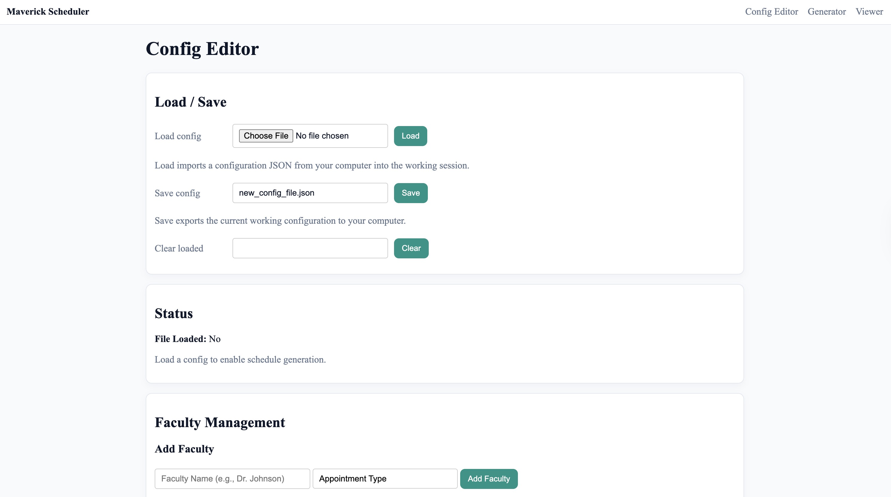

Maverick Course Scheduler
A constraint-based academic scheduling system built with Python, Z3, and Flask. It includes optimization rules, schedule generation, and tools for viewing results.
Key features: Constraint solving, schedule generation, optimization rules, schedule viewing
Python
Z3
Flask
Scheduling